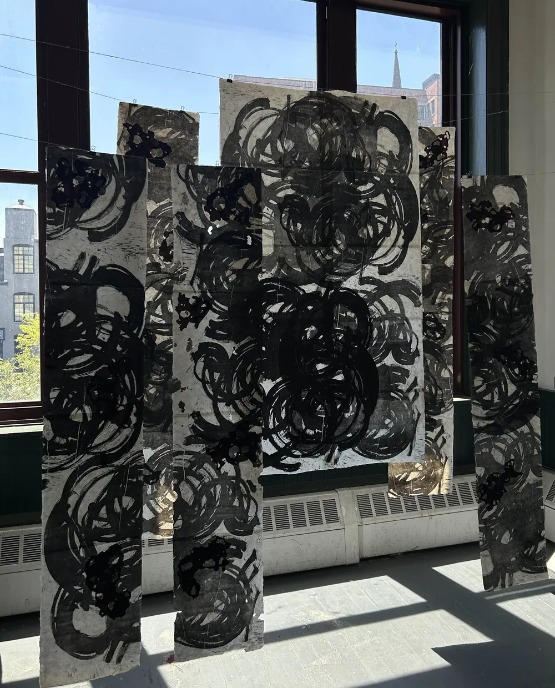
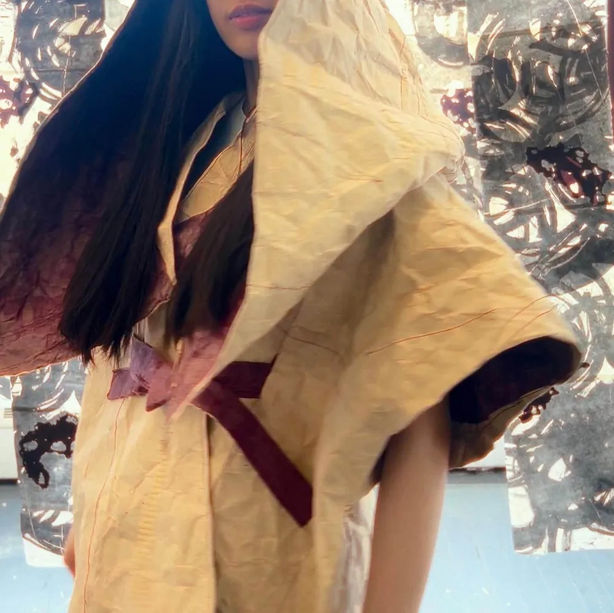

I’ve been curious about my father’s particular love for his stones.我一直好奇,父亲为何那样钟爱他的石头。
He told me that a stone is the carrier of a history, you can see through time from its texture. What they went through creates their unique form we see today.他告诉我,一块石头承载着一段历史,从它的纹理里可以看穿时间。它们所经历的一切,造就了我们今天所见的独特形态。
My father also said, a real man should be like a stone. You should always follow your heart and be devoted to yourself, in the end, you shall find your inner peace. Which is the ultimate way to live in this chaotic world.父亲还说,真正的人应当像一块石头:始终遵从自己的内心,忠于自己,最终便能找到内心的平静。这是在纷乱世界中最好的活法。
In the study of stone I slowly understood what my father said.在研究石头的过程中,我慢慢明白了父亲的话。
The special form of stone came from the magic craftsmanship of nature. They became what they are through time and thousands of temper of nature and stand still in such an elegant and powerful form.石头特别的形态来自大自然神奇的造化。它们历经时间与自然千百次的锤炼,才成为今天的模样,以如此优雅而有力的姿态静立。
Its beauty was found by a person that truly admired it and passed it down as a treasure. The stone remains its own beauty after years and years.它的美被真正欣赏它的人发现,并作为珍宝传承下去。年复一年,石头始终保有自己的美。
I see my father in them.我在它们身上看见了父亲。
I want to be like the stone
A man with dedication and perseverance.
To find someone who knows the song in my head, a land of peace and peace in my mind.
我想成为这样的一块石头
一颗心无旁骛 坚定执着的石头
寻得一己之音 一方净土 一心安宁我想成为这样的一块石头
一颗心无旁骛 坚定执着的石头
寻得一己之音 一方净土 一心安宁